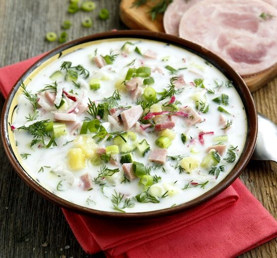

Okroshka

Description
Okroshka (Окрошка) is a cold soup that probably originated in the Volga region of Russia.
Because of its light, refreshing taste, it is popularly served in summer.
The soup usually consists of diced vegetables, eggs,
and meats in a base of either kvass or kefir (the superior version) and is often garnished with sour cream.
Ingredients
- Boiled potatoes: 400 g
- Large chicken eggs: 5
- Fresh cucumbers: 300 g
- Boiled sausage or ham: 300 g
- Green onion: 1 bunch
- Kefir: 1,5 l
- Sour cream: 250 g
- Sparkling mineral water: 500 ml
- Salt: to taste
Steps of preparation
- Peel potatoes and dice them. Place diced potatoes in a medium pot and cover with water. Add 1 Tbsp vinegar and bring to a boil then continue boiling for 10 minutes or until the potatoes are cooked, but not falling apart.
- While potatoes are cooking , boil 3 eggs and cooled them in ice water.
- Dice eggs, cucumbers and your meat of choice. Also chop green onions. Place everything in a large pot and add the potatoes.
- Serve as a salad with sour cream or as a soup with kefir and sparkling mineral water.
Return to main page